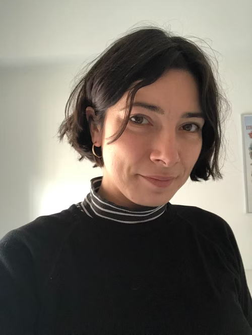

Yasmeen Hitti
Yasmeen Hitti is an engineer and interdisciplinary scientist investigating how technology can improve our understanding of biological systems. She combines artificial intelligence, sensing technologies, and robotics to develop new methods for studying how organisms respond to their environments. She holds a Ph.D. in Bioresource Engineering from McGill University and Mila Quebec AI Institute, where she developed open-source sensor platforms and designed computational approaches to investigate plant–technology interfaces. Her M.Sc. in Bioresource Engineering focused on controlled environment agriculture and material design, leading to a patented approach for concrete-based growing substrates. Yasmeen is currently a Postdoctoral Researcher in Neuroscience at the Université de Montréal, developing multimodal sensing pipelines to study human behaviour. Across biological scales, her work examines how organisms perceive, communicate, and adapt through biological data and computational models.

Katerina Stamadianos
Katerina Stamadianos is a policy and research strategist working to translate complex agricultural and food systems challenges into practical solutions for producers and everyday people. She draws on seasons of hands-on experience in the grape and wine industry, along with a Master of Science in viticulture and enology from L'École Supérieure des Agricultures (ESA) Angers. She is currently an Ivernizzi Research Fellow with the Università Cattolica del Sacro Cuore’s Department of Agricultural and Food Economics, where she studies consumer behaviour in relation to agri-food systems. Her multi-sector background in research and analysis, project management, program development, and public consultation was developed through her time as a policy analyst with Transport Canada and the Federal Economic Development Agency for Southern Ontario. She has led several freelance initiatives that convene policymakers, businesses, and public stakeholders, including collaborations with Berlin’s VibeLab and Toronto’s Long Winter. She also holds a Master of Public Policy from the University of Toronto’s Munk School.